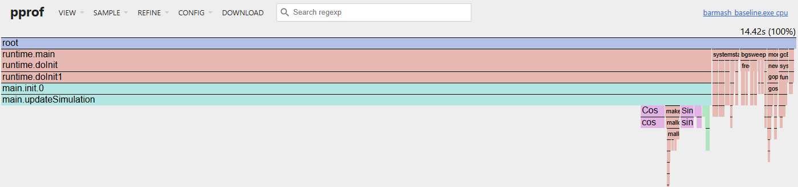
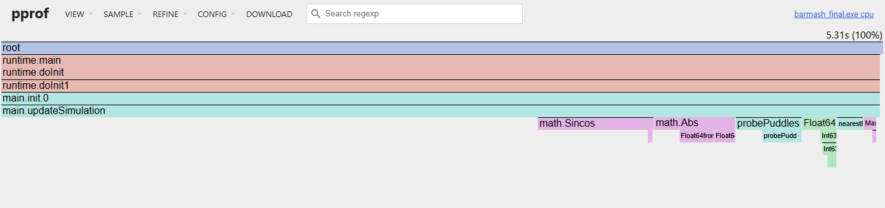

Moteur de simulation temps réel en Go — 10 000 agents, 30 ticks/s
BarMash simule une soirée dans un bar : 10 000 clients se déplacent vers 8 comptoirs, boivent, se bousculent et laissent des flaques qui ralentissent leurs voisins. Le serveur calcule un tick toutes les 33,3 ms et pousse l'état complet au navigateur par WebSocket.
L'audit part de la version naïve livrée, mesure ses goulots réels, puis applique et vérifie une série d'optimisations. Chaque étape est validée par une empreinte bit à bit de l'état de la simulation : le comportement fonctionnel n'a pas changé d'un octet.
Toutes les mesures ont été faites sur la même machine fixe, branchée sur secteur, redémarrée juste avant la campagne, sans aucun autre programme démarré à côté. La baseline et la version finale sont mesurées dans la même session, l'une après l'autre.
| Composant | Spécification | Impact sur l'audit |
|---|---|---|
| CPU | AMD Ryzen 7 9700X (Zen 5) — 8 cœurs / 16 threads, 3,8 GHz (boost 5,5 GHz) | Boucle de simulation mono-thread : un seul cœur sollicité |
| Caches | L1d 48 Ko + L1i 32 Ko par cœur • L2 1 Mo par cœur • L3 32 Mo partagé | Les données chaudes (positions : 160 Ko) tiennent en L2 |
| Mémoire | 32 Go DDR5-5600 (2 × 16 Go Micron, CL36) | Pas de contrainte de capacité |
| Système | Windows 11 Professionnel (build 26300), x86_64 | Mesures sous Windows, pas sous Linux |
| Runtime | Go 1.27.0 windows/amd64 (compilateur gc, inlining et escape analysis activés) | Versions identiques pour baseline et final |
| Outils | benchstat (x/perf) • Hyperfine 1.20.0 • go tool pprof • fieldalignment |
| Mesure | Méthode | Paramètres |
|---|---|---|
| Coût d'un tick | go test -bench, 1 op = 1 tick, état restauré depuis un snapshot tous les 100 ticks pour une charge stable | n = 10 séries • benchstat (Mann-Whitney), seuil p < 0,05 |
| Coût d'une frame réseau | Télémétrie + encodage de la frame complète (10 000 clients, ~360 Ko de JSON) | idem |
| Bout en bout | Hyperfine sur le binaire en mode headless : 5 000 ticks de simulation, du lancement à la sortie | --warmup 3 --runs 10 -N (sans shell intermédiaire) |
| Profils | pprof CPU et allocations sur les mêmes 5 000 ticks, plus un profil live de 20 s sur le serveur réel | Échantillonnage 100 Hz |
| Non-régression | Empreinte FNV-1a de tout l'état (positions, alcoolémie, timers, flaques, RNG) après 4 000 ticks | Doit rester 0xaa36b4f0b73c614c |
Le premier constat de l'audit concerne le benchmark fourni : il ne mesurait que le début de soirée, quand aucune flaque n'existe. Or les flaques n'apparaissent qu'après ~2 500 ticks et leur coût domine ensuite. Deux scénarios figés ont donc été créés.
| Scénario | État | Tick naïf |
|---|---|---|
| early — début de soirée | Tick 0, aucune flaque | 1,645 ms |
| rush — régime de croisière | Tick 5 000, ~450 flaques actives, 214 clients en train de vomir | 5,846 ms |
Min 13,71 s • max 13,95 s • coefficient de variation 0,69 %. La dispersion est faible : le protocole (machine au repos, warmup) suffit à isoler le bruit.

1 2 3 4perf/campaign/baseline_cpu.pprof). Total 14,42 s. Repères : (1) plateau de updateSimulation, où les boucles des flaques et de la bousculade sont écrites en ligne (72,6 % à elles deux) ; (2) Cos / Sin ; (3) makeslice / mallocgc ; (4) tours du GC (bgsweep, gcBgMarkWorker).Le flamegraph ne montre qu'un grand plateau, car les boucles chaudes sont écrites en ligne dans updateSimulation. Le détail vient donc du profil ligne à ligne :
| Repère | Zone du hot path | 5 000 ticks | rush | Cause identifiée |
|---|---|---|---|---|
| 1 | Scan des flaques — chaque client teste chaque flaque | 39,5 % | ~60 % | O(N × P) : 10 000 × ~450 = 4,5 M tests et racines carrées par tick |
| 1 | Scan de bousculade — 60 voisins par client | 33,1 % | ~33 % | 600 k lectures de *Client de 96 o via pointeurs ; math.Sqrt sur tous les voisins |
| 2 | Trigonométrie du déplacement | 4,7 % | ~5 % | math.Cos + math.Sin séparés pour chaque client mobile |
| 3 | Allocations dans la boucle | 1,9 % | ~2 % | makeslice : make([]BarDistance), neighborsCrowd |
| 4 | Garbage Collector (balayage + marquage) | ~5 % | — | bgsweep 3,4 % + gcBgMarkWorker 1,9 % : conséquence directe de 3 |
| Recherche du bar le plus proche | 2,4 % | — | 8 racines carrées par client assoiffé |
Part du temps CPU total (14,42 s) attribuée ligne à ligne avec pprof -top -lines. Le scan des flaques pèse moins sur 5 000 ticks parce que la première moitié de la soirée n'en contient aucune.
| Indicateur (version naïve) | Valeur | Origine |
|---|---|---|
| Allocations par tick | 423 Ko • 3 385 allocs | make([]BarDistance, len(bars)) par client assoiffé (taille non constante → tas) |
| Allocations par frame réseau | 603 Ko • 7 allocs | []ClientPoint + json.Marshal + conversion string(data) |
| Coût d'une frame réseau | 1,224 ms | Réflexion de encoding/json sur 10 000 structures |
| 5 000 ticks sans serveur | 697 cycles GC • 1 820 Mo alloués | Soit ~364 Ko de déchets par tick, collectés en continu (repère 4) |
| Serveur réel, 25 s | 528 cycles GC • 1 611 Mo alloués | S'y ajoute runtime.ReadMemStats (pause Stop-The-World) à chaque tick |
Les actions sont ordonnées selon la loi d'Amdahl : d'abord la zone qui pèse le plus. Chaque ligne correspond à un commit et à une série benchstat (n = 10) comparée à l'étape précédente. Les écarts non significatifs (p ≥ 0,05) sont notés « ~ ».
| # | Action | Hypothèse matérielle | early | rush | Verdict |
|---|---|---|---|---|---|
| Calcul CPU et algorithmique | |||||
| O2 | Index spatial des flaques (grille 32 × 32, tri par comptage) | 4,5 M tests → ~4 candidats par client | ~ | −66,1 % | retenu |
| O5 | math.Sincos au lieu de Cos + Sin | Une seule réduction d'argument | −8,2 % | −4,6 % | retenu |
| O7 | Table précalculée du bar le plus proche (zones de Voronoï) | 8 racines carrées → 1 ; table de 6,4 Ko en L1 | −8,9 % | −6,2 % | retenu |
| Mémoire et localité de cache | |||||
| O1 | Flaques stockées par valeur, expiration FIFO | Supprimer les sauts de pointeurs | +1,4 % | +0,6 % | échec |
| O3 | Positions isolées dans un tableau contigu de 16 o + rejet rapide par boîte englobante | 160 Ko en L2, 4 positions par ligne de 64 o ; 97 % des voisins rejetés sans Sqrt | −21,0 % | −15,5 % | retenu |
| O4 | Suppression des allocations par tick | Plus de pression GC dans la boucle | −9,9 % | −6,1 % | 0 alloc |
| O8 | Compactage de Client : 80 o → 48 o (tri des champs, types réduits) | Clients + positions (640 Ko) dans le L2 | ~ | ~ | neutre |
| I/O réseau | |||||
| O6 | Encodeur JSON écrit à la main dans un buffer réutilisé, runtime/metrics, écriture WebSocket directe | 0 déchet par frame, plus de pause Stop-The-World | frame −66,5 % | retenu | |
| O6b | Table des entiers 0..2047 précalculée | 40 000 entiers écrits en un store de 4 o | frame −60,5 % | retenu | |
Contrôles systématiques : empreinte bit à bit inchangée à chaque étape ; frame octet-identique à encoding/json (le front n'a pas été modifié) ; index, table de Voronoï et Sincos comparés à l'implémentation naïve sur plusieurs millions de points.
Valeurs médianes benchstat, mesurées étape par étape pendant le développement. L'essentiel du gain (−66 %) vient d'une seule action, O2 : c'était le plateau le plus large du profil. Le comparatif final de la section 5 est refait dans une même session, d'où de légers écarts avec ces valeurs.
|| : +52 % de temps| Variante (scan de bousculade) | early | rush |
|---|---|---|
| Avant (séparation chaud/froid seule) | 1,40 ms | — |
if ndx >= 22 || ndx <= -22 { continue } | 2,28 ms (+52 %) | 2,72 ms (+44 %) |
if math.Abs(ndx) >= 22 { continue } | 1,14 ms (−19 %) | 1,60 ms |
math.Abs est un simple masque de bit, sans branchement. Il ne reste qu'un saut, juste dans 97 % des cas. La même condition logique coûte +60 % ou −19 % selon son écriture.*VomitPuddle dispersés provoquent des défauts de cache.Après O6, le tick early a pris +2,8 % alors que la boucle n'avait pas changé. Un A/B entrelacé des deux binaires confirme l'écart (p = 0,000), et la comparaison du code machine montre que seuls le padding (NOP) et un pas d'adresse ont bougé : la boucle chaude a été réalignée. C'est un effet de placement du code, pas un effet algorithmique. D'où la règle suivie ensuite : comparer en A/B entrelacé dès que l'écart attendu est sous ~5 %.
# Prérequis : Go 1.27, benchstat, hyperfine. Durée ~10 min.
./run_benchmarks.sh
| Étape | Ce que fait le script | Sortie (perf/campaign/) |
|---|---|---|
| 1–2 | Reconstruit la baseline depuis git (343a4ee) dans un worktree et compile les deux binaires avec le même harnais headless | environment.txt |
| 3 | Tests : empreinte bit à bit et oracles d'équivalence | tests.txt |
| 4 | Benchmarks Go baseline et final dans la même session, puis benchstat | bench_*.txt, benchstat.txt |
| 5 | Hyperfine sur 5 000 ticks + vérification que l'état final est identique | hyperfine.json/.md, state_*.txt |
| 6 | Profils pprof CPU et allocations des deux versions | *_cpu.pprof, *_allocs.pprof |
Historique complet : un commit par action, avec ses séries brutes dans perf/bench/. Les règles imposées aux assistants IA utilisés pendant le projet sont dans constitution.md à la racine du dépôt.
| Indicateur | Baseline | Finale | Écart | Source |
|---|---|---|---|---|
| Tick, début de soirée (early) | 1,645 ms | 0,912 ms | −44,5 % | benchstat n=10, p=0,000 |
| Tick, croisière (rush) | 5,846 ms | 1,297 ms | −77,8 % (×4,5) | benchstat n=10, p=0,000 |
| Frame réseau (télémétrie + encodage) | 1,224 ms | 0,123 ms | −89,9 % (×9,9) | benchstat n=10, p=0,000 |
| Allocations par tick | 423 Ko • 3 385 | 0 • 0 | −100 % | benchstat |
| Allocations par frame | 603 Ko • 7 | 0 • 0 | −100 % | benchstat |
| 5 000 ticks de bout en bout (moyenne ± σ) | 13,81 ± 0,09 s | 5,55 ± 0,02 s | ×2,49 | Hyperfine, 3 warmup + 10 runs |
| GC sur 5 000 ticks • mémoire allouée cumulée | 697 cycles • 1 820 Mo | 0 cycle • 0,94 Mo | −100 % | runtime/metrics (headless) |
| Serveur réel, 25 s : CPU consommé • cycles GC | 2 610 ms • 528 | 840 ms • 4 | −68 % | pprof live + client WebSocket |
| Taille d'un client en mémoire | 96 o (via pointeur) | 48 o + 16 o (position) | −33 % | unsafe.Sizeof |
| État de la simulation après 5 000 ticks | 6 052 sobres • 214 vomisseurs • 438 flaques • 141 838 bières | identique | empreinte bit à bit | |

1 2 5 plus de tour GC à droitemath.Sincos (12,4 %) ; (5) probePuddles, le scan des flaques via l'index (7,5 % contre 39,5 %). Plus aucune tour du GC.Action la plus rentable : O2, l'index des flaques. À elle seule, elle divise le tick de croisière par 2,95. C'est aussi celle que le profil désignait le plus clairement. Côté réseau, l'encodeur manuel (O6 + O6b) divise le coût d'une frame par près de 10.
Accent mis : d'abord le CPU (algorithmique, puis branchements et racines carrées), puis la mémoire / GC (zéro allocation, flaques et clients sans pointeurs, −40 % sur la struct client). Le serveur tient ses 30 ticks/s avec une marge énorme : 1,3 ms utilisées sur 33,3 ms de budget.
Ce qui n'a pas marché : l'erreur la plus instructive est le rejet par boîte englobante écrit avec ||. Une optimisation « évidente » sur le papier a ralenti le tick de 52 % à cause du prédicteur de branchement. Les deux optimisations purement mémoire (O1, O8) n'ont rien apporté au CPU : dans ce projet, les données tenaient déjà en cache.
Suite : la concurrence n'a pas été traitée. Paralléliser la boucle impose de séparer une phase de lecture (forces, flaques) d'une phase d'écriture pour garder le déterminisme du RNG. Un format binaire pour la frame (~360 Ko de JSON aujourd'hui) réduirait aussi la bande passante réseau.